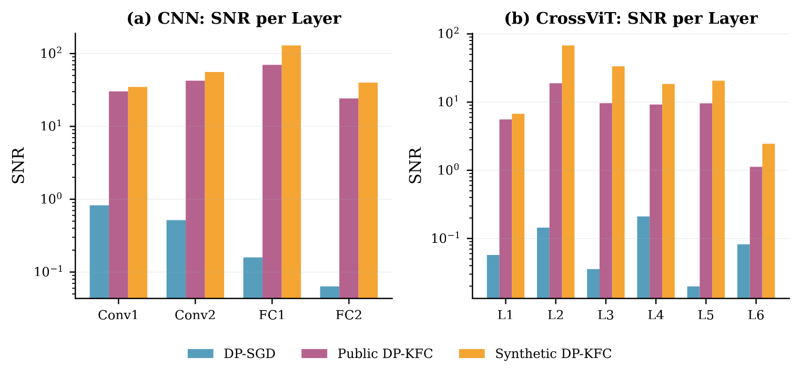
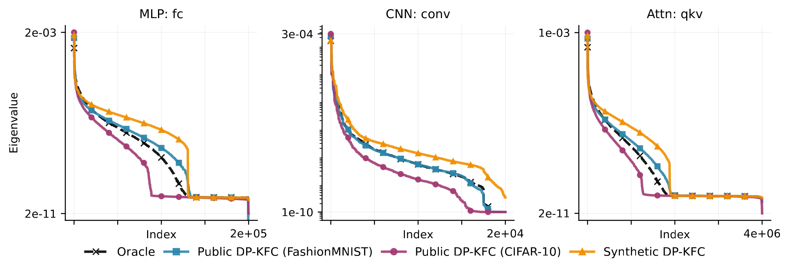
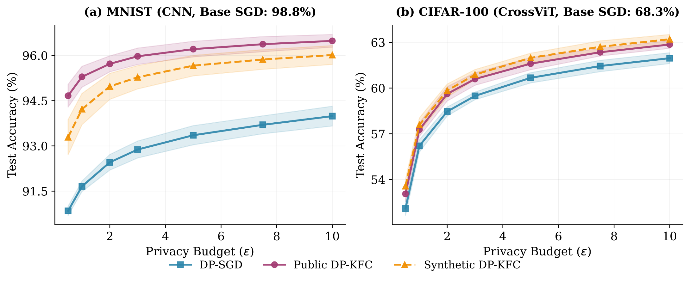
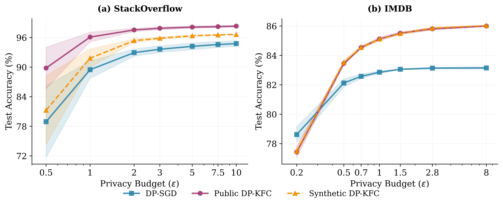
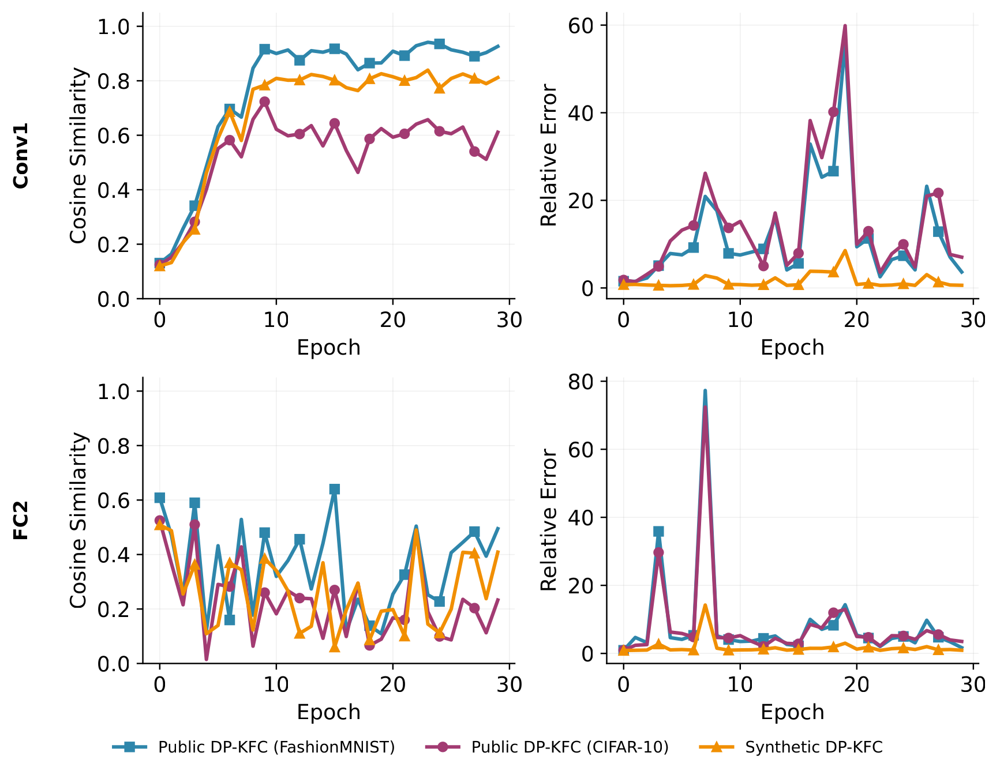

An isotropy mismatch
Deep networks have wildly ill-conditioned loss landscapes, curvature eigenvalues span orders of magnitude across directions. DP‑SGD, on the other hand, enforces a sphere: global \(L_2\) clipping and isotropic Gaussian noise treat every direction the same.
The result: low-sensitivity parameters drown in noise while high-sensitivity directions get over-clipped, heterogeneous signal-to-noise ratios that slow convergence and leave deep models barely beating linear baselines. Second-order preconditioning could rotate and rescale gradients so the sphere finally fits the geometry, but estimating curvature under DP has always cost either privacy budget or a public proxy you may not have (think medical imaging).

Curvature is mostly architecture, not data
The KFAC Fisher block of a layer factorizes into an activation covariance and a gradient covariance:
Mean-field signal-propagation theory says the scale of these factors (and of the resulting preconditioner) is fixed by the architecture, widths, init variances, nonlinearities, and contracts to an architectural fixed point regardless of the inputs. So we can recover it by feeding the network unstructured noise with random labels. The only data-dependent piece is the eigenvector directions of \(A_{\ell-1}\), i.e. the correlation structure of the inputs, and natural data has a universal one: images follow \(1/f^{\alpha}\) power spectra, text follows heavy-tailed token statistics. We bake those priors into the probes (pink noise for vision, structural token sequences for language).

DP‑KFC, in three moves
Probe with synthetic noise
Build a batch of modality-shaped noise (pink noise / structural tokens) with random labels. Forward + backward through the current parameters \(\theta_t\) to get activations \(\tilde a_{\ell-1}\) and error signals \(\tilde\delta_\ell\).
Build the preconditioner
Aggregate Kronecker factors \(\hat A_{\ell-1},\hat G_\ell\), eigendecompose, and form the regularized inverse square roots \(U_{A,\ell},U_{G,\ell}\). The implicit preconditioner is \(\tilde F^{-1/2}=U_A\otimes U_G\), never materialized in full.
Scale, then privatize
Transform each per-sample gradient \(\tilde g_\ell = U_{G,\ell}\, g_\ell\, U_{A,\ell}\) before clipping and noise. In the preconditioned space \(\mathrm{Cov}(\tilde g)\!\approx\! I\): the fixed clip threshold applies uniformly and the DP noise is never amplified by the preconditioner.
Privacy: free, by construction
The preconditioner depends only on the architecture and the synthetic batch, both public, and on \(\theta_t\), which depends only on past privatized releases. So the \(L_2\) sensitivity of the clipped, preconditioned gradient sum is still \(C\): DP‑KFC inherits the exact RDP accounting of plain DP‑SGD. It behaves like implicit adaptive clipping, but the adaptation comes entirely from non-sensitive architectural facts.
Convergence
For non-convex objectives, DP‑KFC converges at the optimal \(\mathcal{O}(T^{-1/2})\) rate, with the privacy term \(d\sigma^2C^2/B^2\) not multiplied by the preconditioner's \(\lambda_{\max}^2\) (the failure mode of post-noise preconditioning). And because synthetic and private curvature share their eigenspectrum (Spectral Scaling Invariance), preconditioning collapses the effective condition number toward 1.
Better SNR ⇒ better accuracy, across modalities
DP‑KFC with synthetic preconditioning consistently beats DP‑SGD and adaptive baselines, and matches public-data preconditioning on vision, at zero privacy cost.


Robust to negative transfer
When a public proxy is mismatched, public-data preconditioning degrades, synthetic noise doesn't, because it carries task-agnostic geometry only. Under a texture-disjoint shift (PathMNIST ← MNIST), synthetic DP‑KFC matches the private oracle while public DP‑KFC drops 4.8 points.
Standalone & complementary
DP‑KFC instantiates the scale-then-privatize principle (acting before the noise). It beats the prior STP baseline (AdaDPS) and post-privatization methods (DP‑AdamBC, DiSK) among data-free methods, and the two families stack: DP‑KFC + DP‑AdamBC is the strongest configuration overall.
| Method | ε = 1 | ε = 2 | ε = 5 | ε = 8 |
|---|---|---|---|---|
| DP-SGD | 91.7 ±0.2 | 92.5 ±0.3 | 93.4 ±0.3 | 93.7 ±0.3 |
| AdaDPS (STP, public) | 91.3 ±0.8 | 93.2 ±1.0 | 93.6 ±1.3 | 93.3 ±1.4 |
| DiSK (post-priv.) | 93.7 ±0.4 | 94.1 ±0.3 | 94.3 ±0.2 | 94.3 ±0.2 |
| DP-AdamBC (post-priv.) | 94.0 ±0.3 | 94.8 ±0.2 | 95.2 ±0.2 | 95.3 ±0.1 |
| Public DP-KFC | 95.3 ±0.4 | 95.7 ±0.3 | 96.2 ±0.3 | 96.4 ±0.3 |
| Synthetic DP-KFC (ours, data-free) | 94.2 ±0.5 | 95.0 ±0.4 | 95.7 ±0.3 | 95.9 ±0.3 |
| Synthetic DP-KFC + DP-AdamBC | 95.5 ±0.3 | 96.1 ±0.2 | 96.4 ±0.3 | 96.4 ±0.3 |
Synthetic curvature is provably aligned
Mean-field variance contraction makes the eigenspectra of private and synthetic KFAC factors proportional in deep networks (Spectral Scaling Invariance). Preconditioning with \(\tilde F^{-1/2}\) therefore collapses the effective curvature \(\tilde F^{-1/2} F\, \tilde F^{-1/2}\) toward a near-identity scalar map, the leftover constant just gets absorbed by the clip norm and learning rate. We verify this empirically: synthetic and oracle spectra stay parallel across 8+ orders of magnitude, on MLP, CNN and attention layers.
- Scale alignment (what the clip norm depends on) stays accurate at every depth.
- Direction alignment is excellent in early layers but degrades in deep layers, where eigenvectors become label-dependent, a limitation for very deep nets.
- Language gap. Random token probes hit the right architectural factors but land off the low-dimensional manifold of real text, closing this (token-frequency priors, embedding-space probes) is open work.

BibTeX
@inproceedings{molina2026dpkfc,
title = {{DP-KFC}: Data-Free Preconditioning for Privacy-Preserving Deep Learning},
author = {Molina Van den Bosch, Marc and Taiello, Riccardo and
Sund Aillet, Albert and Protani, Andrea and
Gonzalez Ballester, Miguel Angel and Serio, Luigi},
booktitle = {Proceedings of the 43rd International Conference on Machine Learning (ICML)},
year = {2026}
}